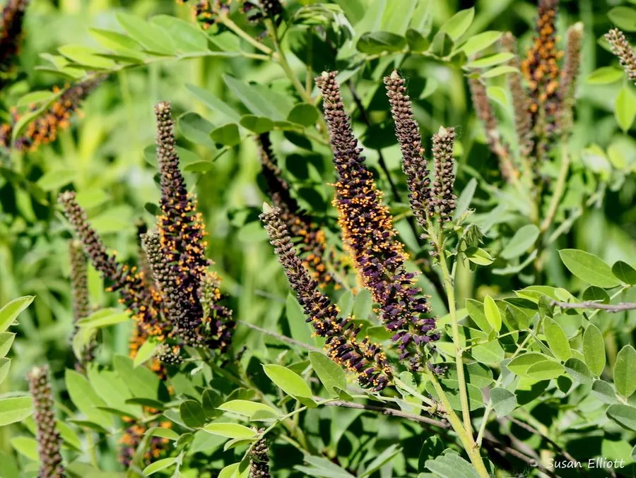

灌木与花木 · 植物界
紫穗槐 Amorpha fruticosa

原产北美的落叶灌木，穗状花序紫褐色、形似槐花，耐旱耐盐碱，是北方重要的绿肥、饲料与护坡植物。
- 分类
- 门被子植物门纲木兰纲目豆目科豆科属紫穗槐属
- 栖息环境
- 海拔 1500 米以下的平原、沙地、盐碱地与路旁，耐寒耐旱耐盐碱
- 地理分布
- 原产北美洲，中国东北、华北、西北及黄河流域广泛栽培
- 保护级别
- 暂无评估；中国未列入国家重点保护野生植物名录
物种志
紫穗槐为落叶灌木，高可达 4 m，枝条直立，幼枝被短柔毛；奇数羽状复叶，小叶 11–25 枚，卵形至椭圆形。花期 5–6 月，穗状花序顶生或腋生，花冠退化、仅有 1 枚旗瓣，紫褐色，雄蕊突出，形似紫色的槐花穗；荚果短小、弯曲，成熟时褐色，内含 1–2 粒种子。
紫穗槐原产北美洲，中国东北、华北、西北及黄河流域广泛栽培，喜光、耐寒、耐旱、耐盐碱，适应性强，在瘠薄沙地与盐碱地上也能生长。枝叶可作绿肥与饲料，根系可固氮、改良土壤；枝条可编织筐篮，也是优良的护坡与防风固沙植物。紫穗槐耐修剪、萌蘖力强，是北方水土保持与公路铁路护坡的常用灌木，花期长，也是良好的蜜源植物。
形态与习性
- 株高可达 4 m，枝条直立
- 花期5–6 月，花紫褐色穗状
- 果期8–9 月，荚果弯曲
- 光照喜光，不耐长期荫蔽
- 水分耐旱，怕积水
- 土壤耐盐碱、耐瘠薄
- 主要用途绿肥与饲料、护坡与防风固沙、枝条编织、蜜源
趣味知识
- 紫穗槐的花穗紫褐色、形似槐花，但花冠退化，只有 1 枚旗瓣。
- 紫穗槐耐盐碱、耐瘠薄，是北方盐碱地与沙地绿化的先锋灌木。
- 紫穗槐枝叶可作绿肥与饲料，根系能固氮、改良土壤。
- 紫穗槐萌蘖力强、耐修剪，常用于公路与铁路护坡。